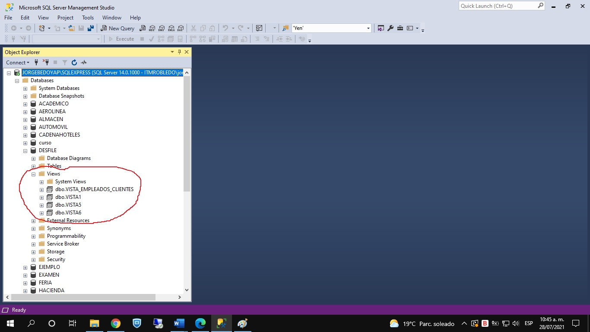
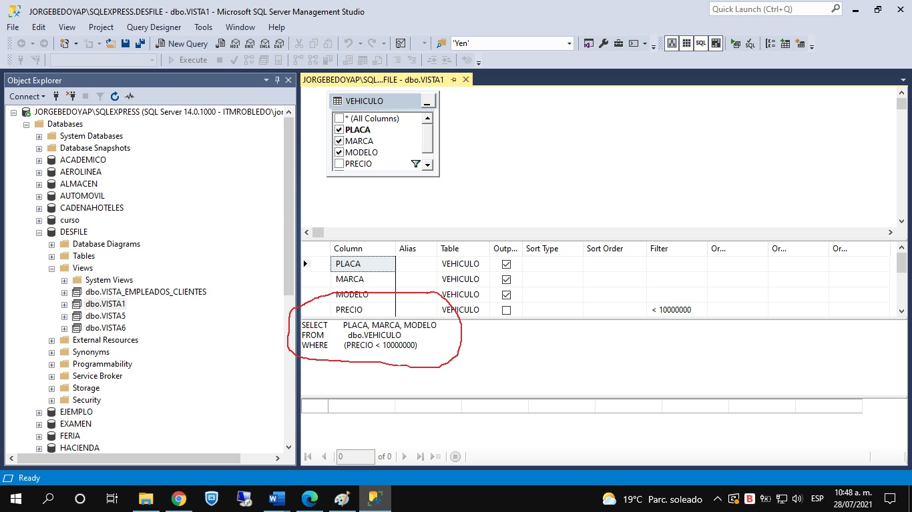

| Una vista es una "estructura" que está almacenada en la base de datos, tal y como se aprecia en la imagen. |  |
|
Pero cuando se analiza bien qué queda grabada en una vista es simplemente una instrucción SELECT. Por lo tanto, una vista es una instrucción SELECT almacenada en la base de datos. Toda vista tiene tabla(s) base(s). Estas son las tablas que están incluidas en el SELECT almacenado, asociado a la vista. |
 |
La instrucción para crear una vista es la siguiente:
CREATE VIEW <nombre vista> AS
Instrucción SELECT asociada
Para poder usar una vista, podemos digitar
SELECT * FROM <vista>.
Por ejemplo, creemos la siguiente vista:
CREATE VIEW vista1 AS
SELECT CEDULA, NOMBRE FROM VETERINARIO WHERE EDAD < 30
Cuando necesitamos usar la vista creada, podemos digitar
SELECT * FROM vista1
Al ejecutar la anterior instrucción, es como si ejecutáramos el SELECT asociado a la vista, es decir, me mostrará la cédula y el nombre de los veterinarios menores de 30 años.
Es importante resaltar acá que a través de la vista, llamada vista1, no se puede acceder a los datos de los veterinarios de 30 años de edad o más. Yendo más allá, a través de la vista creada solamente se puede acceder a la cédula y el nombre de los veterinarios menores de 30 años, no es posible acceder a los demás datos de dichos veterinarios (edad, sexo, dirección, sueldo, etc.). Por lo tanto, una de las razones más importantes para utilizar vistas es para controlar el acceso a los datos de la base de datos. Es posible que haya un usuario que necesite ver, en su operación diaria, la cédula y el nombre de dichos veterinarios. Pero es un usuario que no tiene permiso para mirar los demás datos de dichos veterinarios. A través de esta vista, estaremos controlándole el acceso a los datos a dicho usuario.
Si en la vista anterior, tratamos de ejecutar la siguiente consulta:
SELECT NOMBRE, EDAD FROM vista1
La anterior consulta sacaría error ya que el campo EDAD no está incluida en la definición de la vista.
Por otra parte, existen vistas que son actualizables. Las vistas actualizables son aquellas que permiten, a través de ellas, actualizar los datos de su(s) tabla(s) base(s). Por ejemplo, en la anterior vista, vista1, podríamos hacer lo siguiente:
UPDATE vista1 SET nombre = 'Lina Gonzalez Sierra' WHERE nombre = 'Lina Gonzalez'
Lo que pasaría, ejecutando la anterior instrucción, es que se actualizaría, en la tabla VETERINARIO, los datos, según lo especificado. A través de la vista, se pueden actualizar datos en la(s) tabla(s) base(s).
Qué pasaría si se intenta hacer un INSERT a través de la vista? Y un DELETE?
Por otra parte, SQL Server permite crear una vista con la cláusula WITH CHECK OPTION. La sintaxis sería de la siguiente manera:
CREATE VIEW vista1 AS
SELECT CEDULA, NOMBRE FROM VETERINARIO WHERE NOMBRE LIKE '[A-E]%' WITH CHECK OPTION
Con esta cláusula se asegura que a través de la vista no se puedan actualizar los datos de la(s) tabla(s) base(s), violando la(s) condicion(es) del WHERE. Por ejemplo, suponga que deseamos ejecutar lo siguiente:
UPDATE vista1 SET NOMBRE = 'Francisco Jaramillo' WHERE NOMBRE = 'Ana Leal'
La anterior instrucción sacaría error, ya que se está tratando de actualizar el nombre de un veterinario por uno que empieza por F, cuando en la definición de la vista esta seleccionando veterinarios con nombres que empiezan por A, B, C, D o E.
Video: